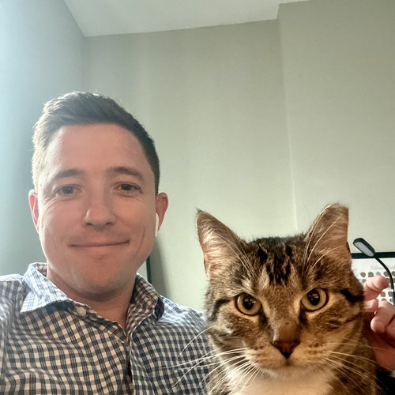
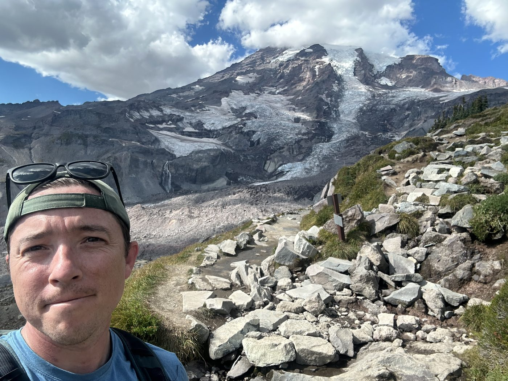

Matthew Self
Healthcare actuary specializing in VBC and ACA, with ongoing research in weather extremes.
Based in St. Louis, MO, my background includes ACA pricing, valuation, and risk adjustment across both ACA and Medicare. I've led ACA pricing processes, built profitability models, and run in-depth data evaluations to support strategic decisions. Outside of healthcare, I work in Python and SQL on statistical research, including published work on weather extremes for the Society of Actuaries.
This site hosts several ongoing personal projects for public use.
Projects
aca.matthewself.com →
Aggregates public-use files for the ACA marketplace and provides unique views of the data.
wx.matthewself.com →
Performs advanced statistical analysis on weather data.
Off the clock
I love reading, exercise, climbing (bouldering and sport), hiking and backpacking, and traveling to the West Coast.

Get in touch
Reach out on LinkedIn or at mselfgg6@gmail.com with any questions or thoughts.